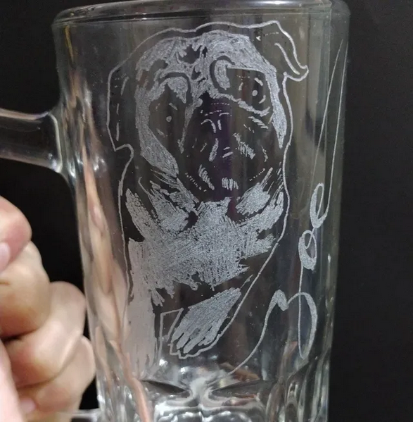

cita del sitio web wikipedia
En paremiología, es una hoja que se le llama retórico que consiste en reproducir un fragmento de una expresión humana respetando su formulación original (en caso contrario se trata de paráfrasis) insertándolo en un discurso propio, generalmente también acatando el tipo de canal en que se comunicó originalmente.
Los navegadores insertan comillas alrededor del elemento q
El objetivo es: anita lava la tina
el INE es el organismo público autónomo encargado de organizar las elecciones federales
al utilizar abreviaturas puede proporcionar información util a los navegadores
address define la información de contacto
Escrito por Daniela Durazo.cite define el título de una obra
Los navegadores generalmente muestran los elementos de cita en cursiva
Zoe Por: izunnyart, febrero 2025
Si su navegador admite la anulación bidireccional la siguiente línea se escribirá de derecha a izquierda
Parrafo al revez